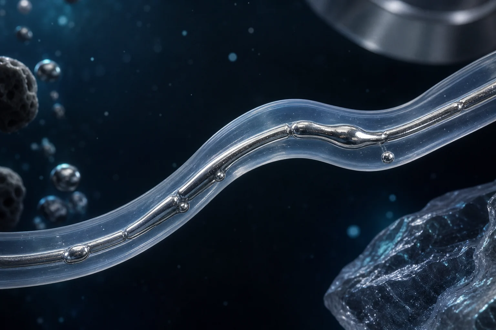
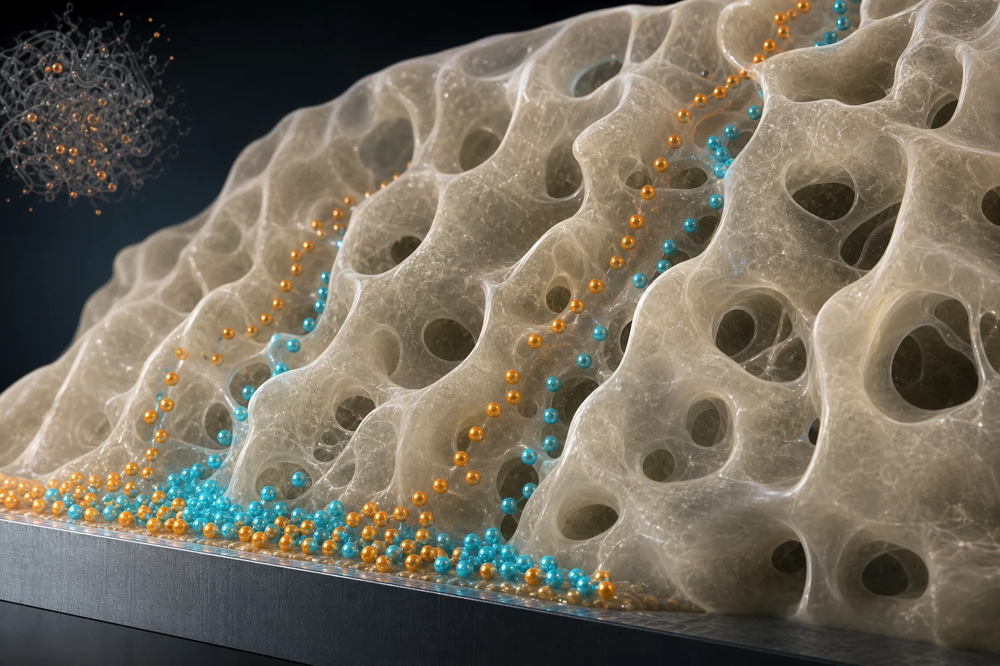
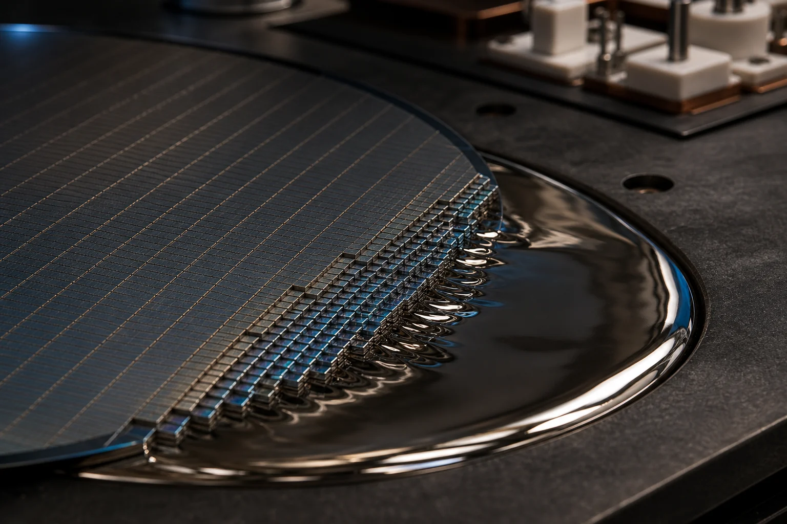

소재 및 공정
소재 시스템 구축
학생들은 후속 시험만 수행하는 것이 아니라 합성, 조성 설계, 계면 제어, 공정 최적화에 직접 참여합니다.
연구 주제
가혹한 환경과 사용 조건에서도 에너지 소자가 안정적으로 작동하도록 소재, 계면, 공정 조건을 설계하는 방법을 연구합니다.
아래의 각 연구 분야는 기술적 문제와 연구실의 접근 방식, 학생이 기여할 수 있는 내용을 보여줍니다.
소재 및 공정
학생들은 후속 시험만 수행하는 것이 아니라 합성, 조성 설계, 계면 제어, 공정 최적화에 직접 참여합니다.
특성 분석
전기·열·신뢰성 측정은 단순한 확인 항목이 아니라 메커니즘과 공정 품질을 입증하는 근거로 활용됩니다.
소자 적용
소재의 발전이 작동하는 소자와 신뢰할 수 있는 주장, 완성도 높은 논문으로 이어지도록 연구를 설계합니다.



테마 01
문제. 심해, 우주, 변형 가능한 시스템에서 전기에너지를 전달하려면 압력과 온도 변화, 저압 조건, 반복 기계 응력을 견디는 인터커넥트가 필요합니다.
접근 방식. 구조 전체의 열적·기계적 불일치를 줄이면서 전도성을 유지할 수 있도록 소재 선택, 계면공학, 제작 공정을 연구합니다.



테마 02
문제. 이온 수송은 전자 수송보다 느리지만, 이온 농도 구배와 이온-고분자 상호작용을 이용하면 기존 시스템에 없는 메모리·열·적응형 거동을 구현할 수 있습니다.
접근 방식. 이온 동역학을 안정적이고 제어 가능한 소자 기능으로 조절하기 위해 이온젤 조성, 고분자 네트워크 구조, 3D 공정 조건을 연구합니다.


테마 03
문제. 전기차, AI 인프라, 전력 시스템의 수요는 기존 실리콘의 한계를 넘어서고 있지만 GaN과 SiC 같은 소재의 확장 가능한 제조 공정은 여전히 핵심 과제입니다.
접근 방식. 고성능 소자 모듈에 필요한 계면과 구조를 유지하면서 제작 장벽을 낮추기 위해 상온·대기 환경의 액체금속 보조 공정을 연구합니다.
학생 연구 적합성
관심 주제가 맞는다면 지원 과정에서 현실적인 첫 프로젝트와 목표를 빠르게 구체화할 수 있습니다.
연락처
대구광역시 달성군 현풍읍 테크노중앙대로 333, 42988
관심 있는 연구 주제가 있다면 이메일을 남겨주세요. 연구실에서 연락드리겠습니다.